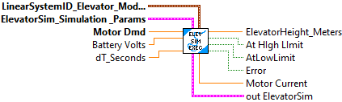
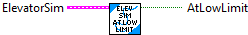
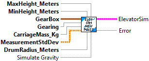
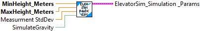
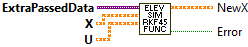
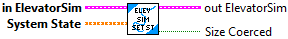
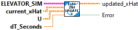
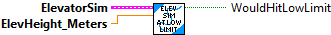

Single call LabVIEW function to simulate an Elevatorr system.
The Elevator linear system definition is:
- States
- position (meters)
- velocity (meters/sec)
- Inputs:
- motor voltage (volts)
- Outputs:
- position (meters)
Inputs:
- LinearSystem Elevator Model Params -- cluster -- Contains physical configuration for Elevator system.
- Elevator Sim Simulation Params -- cluster -- Contains siulation configuration.
- Motor Dmd (CO) -- double -- motor demand value (+/- 1.0 )
- Battery Voltage -- double -- Current simulated battery voltage (Volts)
- dT Sec -- double -- Update period (Seconds, Default: 0.02)
Outputs:
- ElevatorHeight -- double -- Current elevator height (meters)
- At High Limit -- boolean -- Elevator has reached high height limit
- At Low Limit -- boolean -- Elevator has reached low height limit
- Error -- boolean -- If TRUE an error occured.
- Motor Current -- double -- Current motor current (Amps)
- outElevatorSim -- cluster -- Current internal data cluster.
Returns the elevator current draw.
Inputs:
- ElevatorSim -- Data cluster
Outputs:
- Current_Amps -- The elevator current draw. (Amps)

Returns the position of the elevator.
Inputs:
- ElevatorSim -- Data cluster
Outputs:
- Position_Meters -- The position of the elevator. (Meters)

Returns the velocity of the elevator.
Inputs:
- ElevatorSim -- Data cluster
Outputs:
- Velocity_MetersPerSec -- The velocity of the elevator. (M/S)

Returns whether the elevator has hit the lower limit.
Inputs:
- ElevatorSim -- Data cluster
Outputs:
- AtLowLimit -- Whether the elevator has hit the lower limit.

Returns whether the elevator has hit the upper limit.
Inputs:
- ElevatorSim -- Data cluster
Outputs:
- AtHighLimit -- Whether the elevator has hit the upper limit.

Creates a simulated elevator mechanism.
Inputs:
- maxHeightMeters -- The max allowable height of the elevator.
- minHeightMeters -- The min allowable height of the elevator.
- gearbox -- The type of and number of motors in the elevator gearbox.
- gearing -- The gearing of the elevator (numbers greater than 1 represent reductions).
- carriageMassKg -- The mass of the elevator carriage.
- MeasurementStdDev -- Vector matrix of std deviations for measurements.
- drumRadiusMeters -- The radius of the drum that the elevator spool is wrapped around.
- SimulateGravity -- Simulate gravity (optional) Default: True
Outputs:
- OutElevatorSim -- Updated data cluster
- Error -- If TRUE, an error occured.

Pack simulation parameters used by the Elevator Simulation Execute routine.
Inputs:
- Min Height -- double -- Minimum physical elevator height (meters)
- Max Height -- double -- Maximum physical elevator height (meters)
- Pos Sim Std Dev -- double -- Standard deviation for the motor position (meters Default: 0.09)
- SimulateGravity -- boolean -- Simulate gravity (Default: True)
Outputs:
- Elevator Sim Simulation -- cluster -- Packed data for Execute function

Callback function to pass as a strict reference to numerical integration routine to calculate F( X, U, extra )
This is an internal function.
The calculation performed is:
NewX = A x X + B x U + K
Inputs:
- Variant -- Extra data to pass to the function. The format of the data is specific to this routine. In this case the data contains:
- Current A matrix
- Current B matrix
- K matrix
- X -- X matrix
- U -- U matrix
Output:
- NewX -- Calculated new value of X
- Error -- If TRUE, an error occured.

Sets the input voltage for the elevator.
Inputs:
- ElevatorSim -- Data cluster
- volts -- The input voltage. (volts)
- BatteryVoltage -- The current battery voltage (volts)
Outputs:
- OutElevatorSim -- Updated data cluster

Sets the system state.
Inputs:
- ElevatorSim -- Data cluster
- state -- The new state.
Outputs:
- OutElevatorSim -- Updated data cluster
- SizeCoerced -- If TRUE, an error occured. Execution may continue.

Updates the simulation.
Inputs:
- ElevatorSim -- Data cluster
- dtSeconds -- The time between updates.
Outputs:
- OutElevatorSim -- Updated data cluster
- Error -- If TRUE, an error occured.

Updates the state of the elevator.
Inputs:
- ElevatorSim -- Data cluster
- currentXhat -- The current state estimate.
- u -- The system inputs (voltage).
- dtSeconds -- he time difference between controller updates.
Outputs:
- OutElevatorSim -- Updated data cluster
- Error -- If TRUE, an error occured.

Returns whether the elevator would hit the lower limit.
Inputs:
- ElevatorSim -- Data cluster
- elevatorHeightMeters -- The elevator height.
Outputs:
- WouldHitLowLimit -- Whether the elevator would hit the lower limit.

Returns whether the elevator would hit the upper limit.
Inputs:
- ElevatorSim -- Data cluster
- elevatorHeightMeters -- The elevator height.
Outputs:
- OutElevatorSim -- Updated data cluster
- WouldHitUpperLimit -- Whether the elevator would hit the upper limit.